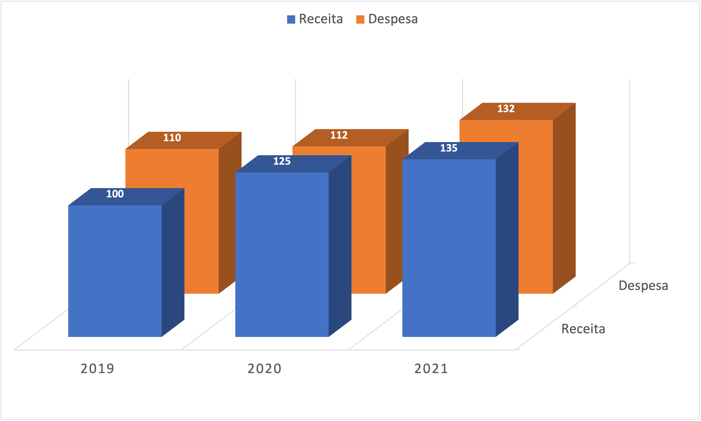
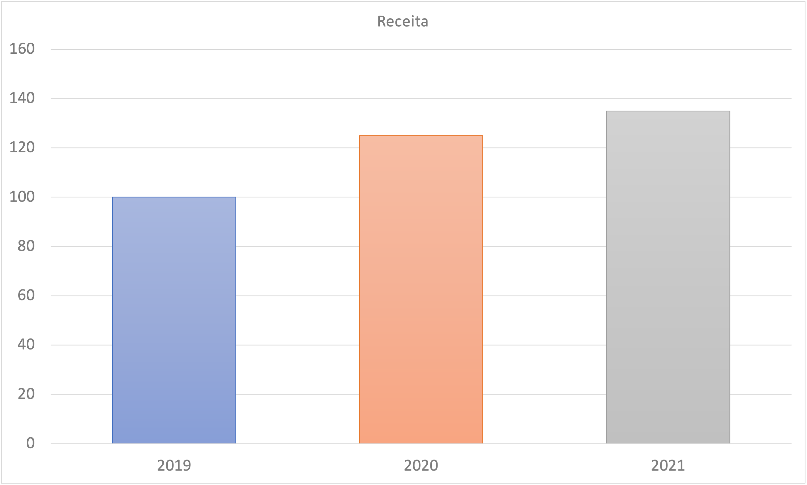
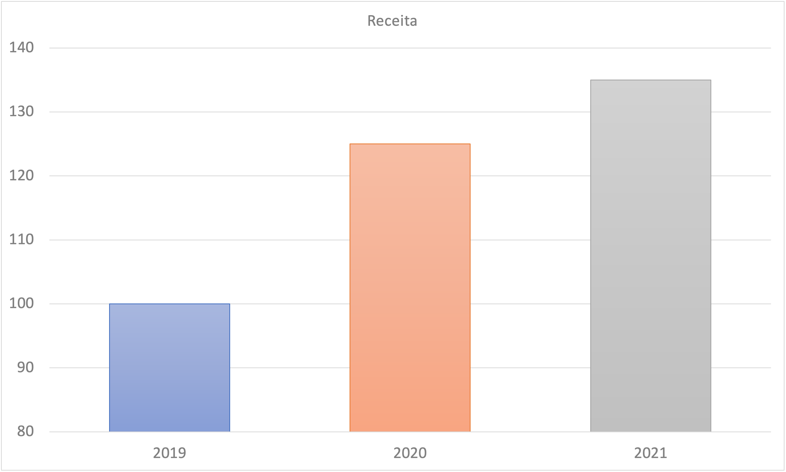
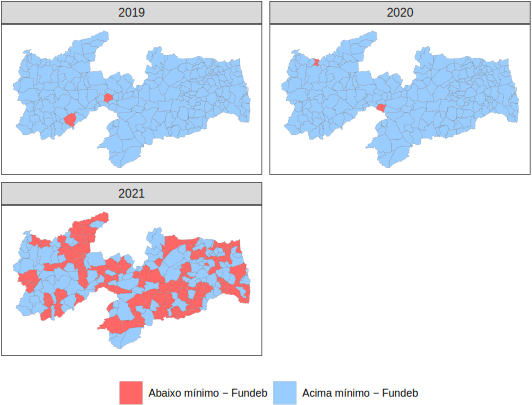
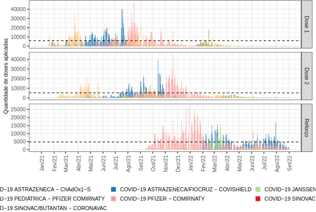
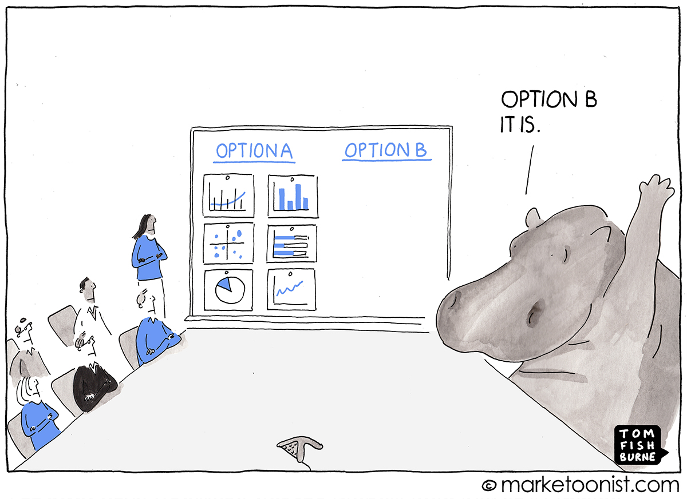
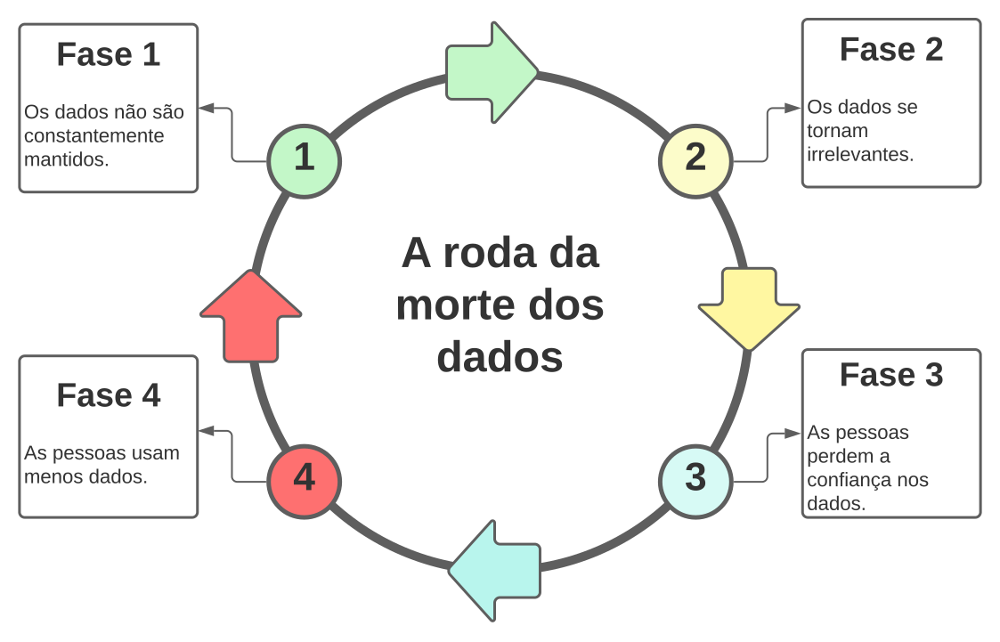
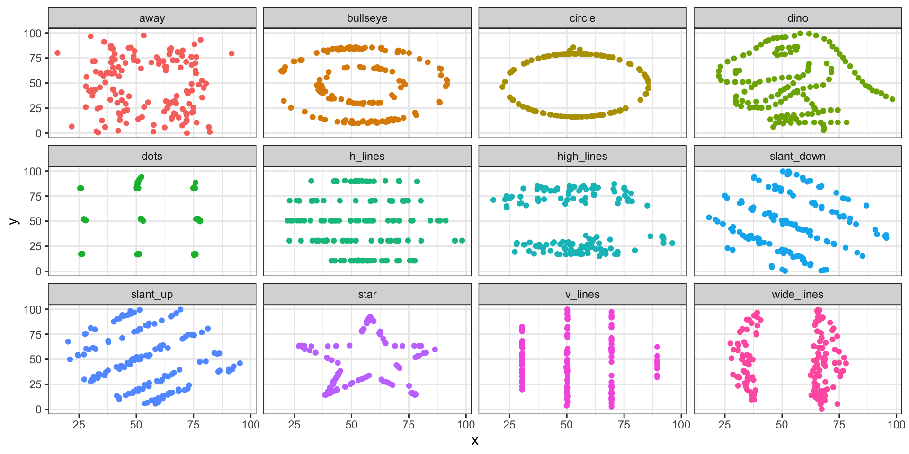

Conceitos, etapas e desafios para a sua implementação
ACE Weverton Lisboa de Sena
agosto - 2023
Índice
Introdução
Parte I
O que são dados?
O que é uma organização orientada a dados?
Controle Externo orientado a dados
Caso I
Alfabetização de dados
Comunicando com dados
Parte II
Desafios para um Controle Externo orientados a dados
Vamos decidir com dados?
Barreiras cognitivas
Viés
Casos II, III e IV
Inteligência artificial: para onde vamos?
Considerações finais
Introdução
PIB Mundial
Na verdade, tal progresso contínuo foi tão radical que muitas vezes perdemos de vista o quanto esse período é excepcional em relação ao resto da nossa história.(Galor, 2022)
Parte I
Sem dados, você é apenas mais uma pessoa com uma opinião. - William Edwards Deming
O que são dados?
De forma simples, dados são qualquer unidade de informação. É o subproduto de toda e qualquer ação, permeando todas as partes de nossas vidas, não apenas na esfera da internet, mas também na história, lugar e cultura. […] Digamos que, nessa definição, dados são uma unidade de informação, o passado tangível. Isso é bastante profundo quando você pensa sobre isso. Os dados são o passado e o passado são os dados.(Eremenko, 2018)
Dados vs. Informação
Apesar de serem frequentemente utilizados como sinônimos, informação e dados possuem conceitos diferentes.
Em linhas gerais, a informação é derivada do conhecimento e o dado é a informação codificada. (Gutman e Goldmeier, 2021)
Dica
A temperatura em João Pessoa é de 32º C. (Dado)
Faz 32º C em João Pessoa, o dia mais quente de setembro de 2023. (Informação)
Tipos de dados
Numérico
Contínuos (A temperatura de um objeto)
Discretos (Número de filhos de uma pessoa)
Categórico
Ordinários (A classe de renda de uma pessoa)
Nominais (A nacionalidade de uma pessoa)
Forma dos dados
Estruturados
Um banco de dados, uma planilha do excel, um arquivo CSV.
Não estruturados
Texto, vídeos, imagens, áudio.
Por que só agora?
Lei de Moore
Custo de armazenamento
O IDC’s Global DataSphere1 projeta que em 2026 os dados alcançarão 221.000 Exabytes2, sendo mais de 90% desse volume composto por dados não estruturados. Essa informação é de 2022.
Nota
Esse número corresponde a 110,5 vezes o volume gerado em 2010. Em 2018, em artigo publicado na Forbes, estimou-se que 90% dos dados do mundo foram criados apenas nos últimos dois anos.
O que significa uma organização orientada a dados (data-driven) ?
Organização orientada a dados
Basicamente, uma organização orientada a dados é aquela que utiliza dados para melhorar seus negócios - simples assim.(Morrow, 2022)
A orientação a dados não é algo binário, mas contínuo: você sempre pode ser mais orientado a dados, coletar dados mais relevantes, ter uma organização analítica mais mais qualificada e fazer mais testes.(Anderson, 2015)
Parece simples, mas…
[…] a NewVantage Partners, em janeiro de 2020, revelou que das 70 empresas pesquisadas, 98,8% estavam investindo em iniciativas de big data e IA, mas apenas 37,8% conseguiram afirmar que criaram uma organização orientada a dados.(Chiu, 2020)
Algumas organizações pensam que são orientadas a dados simplesmente porque geram vários relatórios e dashboards.(Anderson, 2015)
A corrida começou
O governo federal dos EUA está se mobilizando em um esforço unificado para realizar uma das maiores iniciativas de transformação federal em décadas. […] Esta é a história da iniciativa do governo federal para permitir que todas as agências federais tomem decisões orientadas por dados em uma economia mundial e nacional em ritmo acelerado, em mudança e competitiva. Esta é uma história sobre a qual você pode não ler nas primeiras páginas do The New York Times ou do The Wall Street Journal, mas pode ser ainda mais consequente e de longo alcance em termos de seu impacto competitivo econômico e global (Bean, 2022)
Controle Externo orientado a dados
Por que necessitamos de um Controle Externo orientado a dados?
Respostas mais rápidas às crises;
Mais transparência aos jurisdicionados e cidadãos;
Aumento da eficiência operacional.
Por falar em eficiência…
R$ 0,17 Bi
Orçamento do TCE-PB1
R$ 33,0 Bi
Volume a ser fiscalizado2
Por onde começamos?
Segundo Morrow (2022), há cinco pilares para construir uma organização orientada a dados:
Estratégia: o que estamos fazendo?
Liderança: quem decide o que estamos fazendo?
Alfabetização de dados: nós temos as habilidades necessárias para cumprir o que estamos fazendo?
Dados e tecnologia: nós temos acesso aos dados e às ferramentas necessárias para tomar decisões baseadas em dados?
Cultura: o ambiente está pronto para ter sucesso com dados?
Coletando e democratizando os dados
Coletando dados de qualidade
relevante;
tempestivo;
acurado;
limpo;
sem viés;
confiável.
Nota
A estimativa da IBM (em 2016) para o custo anual de dados de baixa qualidade é de US$ 3,1 trilhões por ano apenas nos Estados Unidos. (Redman, 2016)
Erros, aparentemente simples, podem causar grandes problemas.
Coordenada geográfica do TCE-PB: -7.13023, -34.87061
Coordenada geográfica do TCE-PB: -7.13023, -34.97061
Disponibilize seus dados!
A publicidade é justamente elogiada como um remédio para doenças sociais e industriais. A luz solar é considerada o melhor dos desinfetantes; a luz elétrica o policial mais eficiente. - Louis Brandeis
Dados abertos são valiosos
Na União Europeia, estima-se que apenas os dados governamentais abertos gerem um impacto econômico agregado direto e indireto anual de 40 bilhões de euros. Fundamentalmente, essas projeções econômicas reforçam ainda mais a noção de dados governamentais abertos como uma tendência sociotécnica promissora e valiosa.(Ribeiro, 2017)
A coluna # foi adicionada para numeração das linhas e não faz parte dos dados originais.
Data da aplicação
Vacinação - Covid-19
Dados referentes ao Estado da Paraíba
#
Lote da vacina
Fabricante
Referência do fabricante
Data da aplicação
1
FR8392
PFIZER - PEDIÁTRICA
-
2020-03-29
2
FP8290
PFIZER
Organization/46070868001998
2010-03-20
3
08617676400
ASTRAZENECA/FIOCRUZ
Organization/33781055006761
1990-06-16
4
216vcd205w
ASTRAZENECA/FIOCRUZ
Organization/33781055006761
1961-12-08
5
B202106080
SINOVAC/BUTANTAN
Organization/61189445000156
2015-05-31
6
FL1939
PFIZER
Organization/46070868001998
1997-12-18
7
FM3884
PFIZER
Organization/46070868001998
2014-01-14
8
FL4222
PFIZER
Organization/46070868001998
2011-01-11
9
210A21A
JANSSEN
Organization/51780468000268
1972-04-01
10
210a21a
JANSSEN
Organization/51780468000268
1968-10-28
11
FP2890
PFIZER
Organization/46070868001998
2011-11-14
12
213VCD033Z
ASTRAZENECA/FIOCRUZ
Organization/33781055006761
1952-06-20
13
abw4735
ASTRAZENECA/FIOCRUZ
Organization/33781055006761
1990-02-03
14
FL5729
PFIZER
Organization/46070868001998
1963-10-05
15
215VCD156W
ASTRAZENECA/FIOCRUZ
Organization/33781055006761
2001-07-16
16
F63528
PFIZER
Organization/46070868001998
1921-10-26
17
28230BD
PFIZER
Organization/46070868001998
2005-01-19
18
210461
SINOVAC/BUTANTAN
Organization/61189445000156
1974-12-05
19
216VCD185W
ASTRAZENECA/FIOCRUZ
Organization/33781055006761
2003-04-24
20
fd7219
PFIZER
-
2019-08-02
21
FM3884
PFIZER
Organization/46070868001998
1921-12-09
22
FP8290
PFIZER
Organization/46070868001998
2011-11-29
23
216VCD205W
ASTRAZENECA/FIOCRUZ
Organization/33781055006761
1981-09-22
24
FL5729
PFIZER
Organization/46070868001998
1975-06-30
25
EY0575
PFIZER
Organization/46070868001998
2002-03-06
26
216VCD185W
ASTRAZENECA/FIOCRUZ
Organization/33781055006761
1977-07-21
27
FP8290
PFIZER
Organization/46070868001998
2011-02-10
28
F63528
PFIZER
Organization/46070868001998
1921-10-26
29
FL4222
PFIZER
Organization/46070868001998
2007-03-11
30
FM3547
PFIZER
Organization/46070868001998
1973-09-25
31
FL3196
PFIZER
-
2019-01-26
32
210385
SINOVAC/BUTANTAN
Organization/61189445000156
2002-03-22
33
FL7476
PFIZER
Organization/46070868001998
1949-01-18
34
210525
SINOVAC/BUTANTAN
-
2020-10-19
35
FJ2594
PFIZER
46070868001998
1921-06-14
36
FM3884
PFIZER
Organization/46070868001998
2001-12-11
37
FL5729
PFIZER
Organization/46070868001998
1956-03-10
38
FL5729
PFIZER
Organization/46070868001998
1982-11-03
39
ex2405
PFIZER
Organization/46070868001998
2020-05-19
40
FL5729
PFIZER
Organization/46070868001998
1964-05-04
41
039.086.044-19
PFIZER
Organization/46070868001998
2006-01-07
42
EY0575
PFIZER
Organization/46070868001998
1982-01-15
43
210A21A
JANSSEN
Organization/51780468000268
1968-12-03
44
100
PFIZER
Organization/46070868001998
2011-01-11
45
28230BD
PFIZER
Organization/46070868001998
1972-04-10
46
211A21A
JANSSEN
Organization/51780468000268
1970-03-16
47
214VCD105W
ASTRAZENECA/FIOCRUZ
Organization/33781055006761
1959-07-12
48
06
PFIZER
46070868001998
1922-04-13
49
FL1939
PFIZER
Organization/46070868001998
1988-04-08
50
217VCD233W
ASTRAZENECA/FIOCRUZ
Organization/33781055006761
1959-11-09
51
PAA173452
PFIZER
Organization/46070868001998
1921-12-29
52
FG3528
PFIZER
Organization/46070868001998
2012-10-13
53
FM3884
PFIZER
Organization/46070868001998
1931-12-07
54
204H21A
JANSSEN
Organization/51780468000268
1967-10-02
55
201h21a
JANSSEN
51780468000268
1998-06-27
56
Fr8392
PFIZER
Organization/46070868001998
2018-03-18
57
C202107128
SINOVAC/BUTANTAN
Organization/61189445000156
2010-08-20
58
FL4222
PFIZER
Organization/46070868001998
1956-12-17
59
217VCD241Z
ASTRAZENECA/FIOCRUZ
Organization/33781055006761
1972-09-19
60
280378
SINOVAC/BUTANTAN
Organization/61189445000156
2001-08-18
61
FL3196
PFIZER
Organization/46070868001998
2020-01-19
62
2017vcd241z
ASTRAZENECA/FIOCRUZ
-
2000-09-14
63
FL4222
PFIZER
Organization/46070868001998
1983-04-21
64
28230BD
PFIZER
Organization/46070868001998
1989-01-22
65
216VCD185W
ASTRAZENECA/FIOCRUZ
Organization/33781055006761
1968-08-30
66
FR8332
PFIZER - PEDIÁTRICA
-
2020-02-23
67
EY0575
PFIZER
Organization/46070868001998
2002-07-05
68
213VCD004W
ASTRAZENECA/FIOCRUZ
Organization/33781055006761
1921-04-26
69
215VCD156W
ASTRAZENECA/FIOCRUZ
Organization/33781055006761
1986-04-07
70
214VCD105W
ASTRAZENECA/FIOCRUZ
Organization/33781055006761
1972-07-01
71
FL4222
PFIZER
Organization/46070868001998
1994-07-23
72
FP8290
PFIZER
Organization/46070868001998
2012-01-11
73
4120Z005
ASTRAZENECA/FIOCRUZ
Organization/33781055006761
2020-01-28
74
210385
SINOVAC/BUTANTAN
Organization/61189445000156
1985-03-21
75
210VCD337Z
ASTRAZENECA/FIOCRUZ
33781055006761
2012-03-25
76
FE2083
PFIZER
Organization/46070868001998
1975-08-29
77
210a21a
JANSSEN
Organization/51780468000268
1972-04-16
78
FL5729
PFIZER
Organization/46070868001998
1981-05-14
79
210268
SINOVAC/BUTANTAN
Organization/61189445000156
1921-06-20
80
211A21A
JANSSEN
Organization/51780468000268
1971-09-04
81
211a21a
JANSSEN
Organization/51780468000268
1974-10-23
82
219vcd188z
ASTRAZENECA/FIOCRUZ
Organization/33781055006761
1988-03-28
83
32010BD
PFIZER
Organization/46070868001998
2012-11-26
84
FA9096
PFIZER
Organization/46070868001998
1978-01-22
85
219vcd270w
ASTRAZENECA/FIOCRUZ
Organization/33781055006761
1964-01-23
86
210a21a
JANSSEN
Organization/51780468000268
1969-09-02
87
210221A
SINOVAC/BUTANTAN
Organization/61189445000156
1921-05-19
88
28230BD
PFIZER
Organization/46070868001998
2005-07-28
89
214VCD105W
ASTRAZENECA/FIOCRUZ
Organization/33781055006761
2001-07-12
90
FL4222
PFIZER
Organization/46070868001998
1961-10-22
91
FL4222
PFIZER
Organization/46070868001998
1959-10-17
92
FL5729
PFIZER
Organization/46070868001998
2002-07-15
93
FJ2594
PFIZER
46070868001998
1921-06-14
94
210413
SINOVAC/BUTANTAN
Organization/61189445000156
2020-09-25
95
204H21A
JANSSEN
Organization/51780468000268
1965-12-12
96
B202106053
SINOVAC/BUTANTAN
Organization/61189445000156
1958-01-21
97
FL5729
PFIZER
Organization/46070868001998
1960-08-16
98
F63528
PFIZER
Organization/46070868001998
1921-10-26
99
210A21A
JANSSEN
Organization/51780468000268
1966-01-11
100
211A21A
JANSSEN
Organization/51780468000268
1975-11-02
101
210279
SINOVAC/BUTANTAN
Organization/61189445000156
1921-07-18
102
210198
ASTRAZENECA/FIOCRUZ
Organization/33781055006761
1964-01-23
103
EY0575
PFIZER
Organization/46070868001998
1983-06-22
104
FL5729
PFIZER
Organization/46070868001998
1964-05-10
105
FL1939
PFIZER
Organization/46070868001998
1954-12-30
106
210461
SINOVAC/BUTANTAN
Organization/61189445000156
1988-08-25
107
FL7476
PFIZER
Organization/46070868001998
1955-11-07
108
B202106080
SINOVAC/BUTANTAN
Organization/61189445000156
2010-03-13
109
B202106080
SINOVAC/BUTANTAN
Organization/61189445000156
1949-03-20
110
FL5729
PFIZER
Organization/46070868001998
1978-09-22
111
FD7221
PFIZER
Organization/46070868001998
1989-01-20
112
219VCD280W
ASTRAZENECA/FIOCRUZ
-
2014-10-25
113
210461
SINOVAC/BUTANTAN
Organization/61189445000156
2020-09-30
114
C202107128
SINOVAC/BUTANTAN
Organization/61189445000156
2002-11-07
115
210a21a
JANSSEN
Organization/51780468000268
1966-02-26
116
EY0575
PFIZER
Organization/46070868001998
2002-08-13
117
215VCD145W
ASTRAZENECA/FIOCRUZ
Organization/33781055006761
2000-12-10
118
FM3457
PFIZER
Organization/46070868001998
1963-06-03
119
215VCD156W
ASTRAZENECA/FIOCRUZ
Organization/33781055006761
1999-02-17
120
B202106074
SINOVAC/BUTANTAN
Organization/61189445000156
2002-01-10
121
219VCD280W
ASTRAZENECA/FIOCRUZ
Organization/33781055006761
1980-04-24
122
210A21A
JANSSEN
Organization/51780468000268
1971-09-19
123
F63528
PFIZER
Organization/46070868001998
1921-10-26
124
FL1939
PFIZER
Organization/46070868001998
1921-11-29
125
FM3457
PFIZER
Organization/46070868001998
1973-10-24
126
FM3884
PFIZER
Organization/46070868001998
1954-07-05
127
FL7476
PFIZER
Organization/46070868001998
1954-04-02
128
28230BD
PFIZER
Organization/46070868001998
2006-04-11
129
216VCD205W
ASTRAZENECA/FIOCRUZ
Organization/33781055006761
1961-11-20
130
204H21A
JANSSEN
Organization/51780468000268
1974-06-08
131
FM5988
PFIZER - PEDIÁTRICA
-
2016-02-15
132
F63528
PFIZER
Organization/46070868001998
1921-10-26
133
311308A
PFIZER
Organization/46070868001998
2002-10-20
134
F63528
PFIZER
Organization/46070868001998
1921-10-26
135
B202106074
SINOVAC/BUTANTAN
Organization/61189445000156
1972-02-05
136
210440A
SINOVAC/BUTANTAN
Organization/61189445000156
2000-09-02
137
FM3457
PFIZER
Organization/46070868001998
2007-09-24
138
FL5729
PFIZER
Organization/46070868001998
1982-02-12
139
211A21A
JANSSEN
Organization/51780468000268
1975-06-06
140
210142
SINOVAC/BUTANTAN
Organization/61189445000156
2011-04-16
141
FP8290
PFIZER
Organization/46070868001998
2011-01-25
142
FL1939
PFIZER
Organization/46070868001998
1955-11-29
143
FL4222
PFIZER
Organization/46070868001998
1986-04-20
144
210268
SINOVAC/BUTANTAN
Organization/61189445000156
1921-06-20
145
211a21a
JANSSEN
Organization/51780468000268
1974-07-30
146
211a21a
JANSSEN
Organization/51780468000268
1964-06-28
147
100
PFIZER
Organization/46070868001998
2011-01-11
148
FP8290
PFIZER
Organization/46070868001998
2011-02-28
149
F63528
PFIZER
Organization/46070868001998
1921-10-26
150
210221A
SINOVAC/BUTANTAN
Organization/61189445000156
1921-05-19
151
100
PFIZER
Organization/46070868001998
1922-01-05
152
PAA174601
PFIZER
Organization/46070868001998
2008-11-23
153
216VCD213W
ASTRAZENECA/FIOCRUZ
Organization/33781055006761
2020-08-08
154
211a21a
JANSSEN
Organization/51780468000268
1975-02-20
155
210461
SINOVAC/BUTANTAN
Organization/61189445000156
1974-12-05
156
213VCD007ZVA
ASTRAZENECA/FIOCRUZ
Organization/33781055006761
2012-03-22
157
FP1176
PFIZER
Organization/46070868001998
2011-05-29
158
FL5729
PFIZER
Organization/46070868001998
2012-12-21
159
FL5729
PFIZER
Organization/46070868001998
1997-01-15
160
FH4750
PFIZER
Organization/46070868001998
1953-07-11
OpenDataSUS - opendatasus.saude.gov.br
Dados coletados em 6 de julho de 2023.
A coluna # foi adicionada para numeração das linhas e não faz parte dos dados originais.
Achado importante
Aviso
Foram encontrados 861 dados de CPF (validados) na base de dados referente à vacinação contra a Covid-19 na Paraíba. Os dados dos CPF estão inseridos na variável vacina_lote.
Alfabetização de dados é a capacidade de ler, trabalhar, analisar e se comunicar com dados. (Morrow, 2021)
Uma necessidade
Todos devem se tornar alfabetizados em dados. Todos devem ensinar as crianças a serem alfabetizadas em dados e fazer perguntas importantes sobre os dados e o mundo ao seu redor. No passado, você poderia dizer que ver é acreditar. Mas com deepfakes e desinformação alimentada por IA, não podemos mais dizer isso. Se você não está fazendo as perguntas certas sobre os dados e as tecnologias que vemos, pode estar prestando um desserviço a si mesmo e às gerações futuras. (Anjali Samani1)
Ler os dados
A leitura de dados é a nossa capacidade de olhar e compreender os dados e as informações, quando as possuímos, o que nos capacita a ter sucesso com os dados. (Morrow, 2021)
Trabalhar com os dados
[…] vemos que trabalhar com dados é fazer algo com dados em uma organização para atingir um resultado ou propósito. (Morrow, 2021)
Analisar os dados
A análise de dados também nos dá uma maneira de decifrar e filtrar as enormes quantidades de dados e informações que nos são apresentadas em nossas vidas. A maioria de nós já ouviu a expressão “notícias falsas”. A capacidade adequada de fazer perguntas e analisar dados e informações pode nos ajudar a decifrar a desinformação que nos é apresentada. (Morrow, 2021)
Os quatro tipos de análise
Análise descritiva:O que aconteceu?
Análise diagnóstica:Por que isso aconteceu?
Análise preditiva:O que acontecerá?
Análise prescritiva:O que devemos fazer caso isso ocorra?
Comunicando com dados
Além de coletar dados e torná-los apresentáveis, essa habilidade trata de explicar esses dados para não especialistas de uma maneira compreensível. Muitas vezes, isso significa entender tópicos de dados mais avançados. (Cabtree e Nehme, 2023)
Somos mal preparados para uma importante tarefa, cada vez mais exigida. A tecnologia permitiu acumular volumes de dados cada vez maiores e há também um crescente desejo associado de entendê-los. […] Há uma história em seus dados. Mas suas ferramentas não sabem qual é essa história. É aí que você entra. (Knaflic, 2018)
O que evitar
Fuja do 3D e dos gráficos de pizza!
Não use 3D! Não serve absolutamente para nada e pode prejudicar muito, como vemos aqui, pois distorce a percepção visual dos números. (Knaflic, 2018)

Bases diferentes de zero em gráficos de barras


Aviso
Os gráficos de barras são fáceis de interpretar e identificar diferenças entre as categorias. No entanto, no exemplo acima, as escalas iniciam em valores diferentes, causando essa distorção visual.
Tabelas
Alguns exemplos1:
Exemplo 1
Situação dos municípios em relação à aplicação do Fundeb1

Exemplo 2
Aplicação em Fundeb x DTP1

Exemplo 3
Aplicação de vacinas diárias contra a Covid-191

Parte II
Desafios para um Controle Externo orientado a dados
O maior problema enfrentado pelas empresas que estão tentando inovar e se transformar com dados é uma cultura de “sempre fizemos assim”. - Gabie Boko
Esforço das organizações
Situação em relação a Big Data/IA
2019
2020
2021
Impulsionando a inovação com dados
59.50%
64.20%
48.50%
Competindo com análise de dados
47.60%
45.10%
41.20%
Gerenciando dados como um ativo de negócio
46.90%
50.00%
39.30%
Possui uma estratégia de dados bem articulada
-
-
30.00%
Resultados de negócios em transformação
-
-
29.20%
Forjou uma cultura de dados
28.30%
26.80%
24.40%
Criou uma organização orientada a dados
31.00%
37.80%
24.00%
Fonte: NewVantage Partners, Big Data and AI Executive Survey 2021.
Referência: (BEAN, 2021)
Nota
Participaram do The 2021 Big Data and AI Executive Survey empresas como: Bank of America, Citigroup, Morgan Stanley, VISA, Mastercard, Pfizer, AIG, McDonald’s, Starbucks e Wallmart.
Apesar dos altos níveis de investimento em Big Data e Inteligência Artificial, chegando a 99% das empresas que participaram da pesquisa, as organizações ainda lutam para extrair valor dessas tecnologias e se tornarem organizações orientadas a dados (Bean, 2021).
Vencer a HiPPO

HiPPO - Highest Paid Person’s Opinion
Desafios organizacionais
Grandes organizações geralmente têm silos nos quais as equipes podem ter objetivos diferentes. Esses silos podem estar em vigor devido a requisitos legais, como é comum nas finanças, ou podem existir simplesmente porque as equipes podem não ter trabalhado de forma colaborativa no passado. Seja qual for a causa, os silos causam falta de comunicação e desalinhamento, o que prejudica a eficácia geral da organização.
Um sintoma disso pode ser gerentes que querem construir equipes maiores ou a criação de mais de um centro de excelência em IA. (Pecherskiy, 2021)
Qualidade dos dados e ausência de confiança

Fatores culturais
Alguns fatores de resistência à mudança:
Medo do desconhecido;
Falta de compreensão da necessidade de mudança;
Medo de perder status, segurança, pertencimento ou competência;
Conexão emocional com o estado atual;
Falta de confiança naqueles que promovem às mudanças;
Insuficiente conhecimento sobre as mudanças propostas e suas implicações;
Falta de crença de que a mudança leverá a um estado melhor.
Fatores culturais
Nota
Por cinco anos consecutivos, o grande desafio para as organizações se tornarem orientadas a dados continuam sendo as barreiras culturais (92,2%) e não as barreiras tecnológicas. As empresas continuam lutando contra mudanças de cultura, alinhamento organizacional, e problemas com comunicação, conhecimento das pessoas, resistência ou falta de compreensão sobre a necessidade de mudança. (Bean, 2021)
Ausência de alfabetização de dados
..quero desmistificar dois mitos comuns. O primeiro é a visão de que você precisa ser um sábio da matemática para tomar decisões com dados, o que impede muitas pessoas de usar dados para a tomada de decisões. Esta é uma crença errônea. A realidade é que tomar decisões com dados não é uma escolha mais, é uma necessidade.
[…]
O segundo mito é a ilusão de que, com a abundância de Big Data que nos cercam, podemos finalmente chegar ao nirvana de tomar certas decisões — a decisão perfeita. (Frank, Magnone e Netzer, 2022)
Algo em comum?

Vejamos as medidas…
dados
media_x
variancia_x
media_y
variancia_y
correlacao
away
54.26610
281.2270
47.83472
725.7498
-0.06412835
bullseye
54.26873
281.2074
47.83082
725.5334
-0.06858639
circle
54.26732
280.8980
47.83772
725.2268
-0.06834336
dino
54.26327
281.0700
47.83225
725.5160
-0.06447185
dots
54.26030
281.1570
47.83983
725.2352
-0.06034144
h_lines
54.26144
281.0953
47.83025
725.7569
-0.06171484
high_lines
54.26881
281.1224
47.83545
725.7635
-0.06850422
slant_down
54.26785
281.1242
47.83590
725.5537
-0.06897974
slant_up
54.26588
281.1944
47.83150
725.6886
-0.06860921
star
54.26734
281.1980
47.83955
725.2397
-0.06296110
v_lines
54.26993
281.2315
47.83699
725.6388
-0.06944557
wide_lines
54.26692
281.2329
47.83160
725.6506
-0.06657523
Fonte: DAVIES, R.; LOCKE, S.; D’AGOSTINO MCGOWAN, L. datasauRus: Datasets from the Datasaurus Dozen.
Vamos decidir com dados?
O desafio do mundo atual não é a falta de informação, mas nosso julgamento para utilizá-la. (Frank, Magnone e Netzer, 2022)
Exercício 1: A infecção pelo Cordyceps
Em um município do Estado da Paraíba, 6.000 pessoas foram infectadas por uma variante mortal do Cordyceps. Um grupo de cientistas concluiu por duas possibilidades de tratamento para essas pessoas. Como sendo a autoridade responsável pela tomada de decisão, você foi informado das consequências de cada uma das opções, com dados precisos, ou seja, sem margem de erro.
Tome a decisão com base no que foi reportado. Vidas estão em jogo e você não tem muito tempo!
Exercício 2: Nascimentos de uma maternidade pública
Relembrando…
Nota
Se A e B forem dois eventos independentes, a probabilidade de ocorrência conjunta deles é igual ao produto de suas probabilidades individuais. Para \(n\) eventos temos:
O maquinário associativo procura causas. A dificuldade que temos com as regularidades estatísticas é que elas pedem uma abordagem diferente. […] Somos ávidos por padrões, temos fé em um mundo coerente, em que as regularidades não aparecem por acidente, mas como resultado de uma causalidade mecânica ou da intenção de alguém. (Kahneman, 2012)
Barreiras cognitivas
[…] uma limitação desconcertante de nossa mente: nossa confiança excessiva no que acreditamos saber, e nossa aparente incapacidade de admitir a verdadeira extensão da nossa ignorância e a incerteza do mundo em que vivemos. (Kahneman, 2012)
Os mal-informados são muito mais perigosos do que os não informados; a má informação é pegajosa. (Anderson, 2015)
VIÉS
Alguns tipos de vieses
Viés de sobrevivência: nós consideramos aqueles que sobreviveram como representativos da população;
Viés de confirmação: preconceito que prefere ou busca dados que confirmem o que acreditamos saber;
Viés temporal: foco em dados mais recentes em detrimento de dados mais antigos;
Viés amigo ou inimigo: julgamento da informação com base na pessoa que a fornece.
DECIDA!
Defina o problema;
Estabeleça um critério;
Considere todas as alternativas;
Identifique a melhor alternativa;
Desenvolva e implemente um plano de ação;
Avalie e monitore a solução e feedback quando necessário.
Casos
Nem todas as informações estatísticas que você vai encontrar podem ser testadas com a segurança de uma análise química ou a precisão de um laboratório de testes. No entanto, é possível provocar o assunto com cinco1 perguntas básicas e, ao encontrar as respostas, evitar aprender um monte de coisas que não são verdadeiras. A primeira característica a procurar é a parcialidade — o laboratório que tem um ponto a ser provado para estabelecer uma teoria, uma reputação ou uma remuneração; o jornal cujo objetivo é uma boa história; os trabalhadores ou gerentes com um nível salarial em jogo.(Huff, 2016)
Caso II: New Coke
New Coke
1972: 18% bebiam apenas Coca-cola e 4% apenas Pepsi;
1980: A Coca-cola tinha caído para 12% enquanto a Pepsi subido para 11%;
A Coca-cola gastava, nesse período, mais de U$ 100 Mi a mais por ano;
Desafio Pepsi com consumidores exclusivos de Coca-cola;
Pesquisa interna da Coca-cola: 57% Pepsi, 43% Coca-cola;
Os cientistas da Coca-cola alteraram a fórmula para torná-la mais leve e suave;
Centenas de milhares de consumidores foram testados com o novo sabor;
CEO: “O movimento mais seguro jamais feito pela empresa”
O resultado foi um desastre e, meses depois, a Coca-cola retornou à formula original
Onde estava o erro?
“Teste do golinho”;
Atribuição da perda de mercado a uma única causa.
Transferência de sensação.
Dados e números tendem a fornecer a sensação confortável de precisão e certeza, mas raramente nos contam a história completa. Os números por si só podem nunca fornecer uma solução ou resposta perfeita, e eles nunca imunizarão os tomadores de decisão de vacilos. (Frank, Magnone e Netzer, 2022)
Um estudo elaborado pelo Instituto Fecomércio/AL comprovou a viabilidade e o impacto positivo da realização do São João ‘Massayó: Sol… Mar e Forró’, programado pela Prefeitura de Maceió. A estimativa é de que, nos 15 dias, mais de R$ 100 milhões sejam injetados na economia local, beneficiando 9,4 mil empresas de 32 segmentos, além de sacudir o mercado informal e elevar a ocupação hoteleira numa temporada tradicionalmente fria.
Os pesquisadores entrevistaram 518 pessoas na cidade, inclusive comerciários, para obter de forma mais verídica o perfil geral e a opinião sobre os festejos juninos. Eles responderam a um questionário no qual reagiam sobre a possibilidade de o município investir em uma programação competitiva, mesclando atrações locais e nacionais.
Quando os resultados foram compilados, a pesquisa revelou que 8 em cada 10 maceioenses aprovam a festa; 7 em cada 10 entrevistados acharam que ter um grande São João, com uma megaestrutura e novas atrações, é uma ideia entre boa e excelente. Além disso, 82,10% deste público reconhecem que o evento vai movimentar a economia local, gerando emprego e renda.
Levando em consideração a população ocupada de Maceió, aproximadamente 145.751 mil pessoas pretendem ir para as festividades juninas organizada pela Prefeitura de Maceió, representando mais da metade dos entrevistados.
Projeta-se, também, que, por dia, sejam gastos R$ 3,7 milhões com alimentação em barraquinhas e ambulantes, totalizando um volume gasto de, aproximadamente, R$ 56,2 milhões, dando um ‘gás’ no mercado informal da cidade.
Na edição anterior, que teve 15 dias de duração, foram injetados mais de R$ 100 milhões na economia local. A expectativa para este ano é dobrar a marca e chegar a R$ 200 milhões, gerando renda e postos de trabalho para toda a cadeia produtiva do turismo.
Caso IV: Gastos com combustíveis
Com apenas 17 mil habitantes, Prefeitura de ########### abre licitação de R$ 2,8 milhões em combustíveis.
Município da Paraíba com 3,3 mil habitantes assina contrato de mais de R$ 1,4 milhão em combustíveis.
Com apenas 14,6 mil habitantes, Prefeitura de ########### vai gastar mais de meio milhão com combustíveis.
Devemos questionar
A população está correlacionada com o gasto de combustíveis?
Não seria mais interessante associar com o número de veículos do município ao consumo de combustíveis?
A distância entre o município e o respectivo pólo tem influência no consumo?
A área geográfica do município tem influência no consumo de combustíveis?
Há veículos de diferentes portes na frota municipal? (ônibus, camionetes, veículos de passeio)
Todo valor licitado será gasto?
Há máquinas consumindo combustível?
Inteligência Artificial: para onde vamos?
Johannes Vermeer Moça com brinco de pérola (1665)
IA não é um conceito novo. Na verdade, as suas raízes remontam a várias décadas. Mas a sua adoção generalizada e o seu crescimento exponencial só foram sentidos nos últimos 10-15 anos devido à convergência de três vetores de crescimento: avanços algorítmicos, poder computacional e explosão de dados. (Espindola e Wright, 2021)
Para onde queremos ir?
Pedimos aos nossos leitores, especialmente aos profissionais, que se coloquem atrás de um véu de ignorância e ponderem como devemos partilhar conhecimentos práticos numa sociedade baseada na tecnologia e na internet. Não estamos pedindo aos leitores que considerem o futuro das profissões. Isso limitaria imediatamente a imaginação – convidar a opiniões sobre como as profissões deveriam evoluir sugere que as profissões devem ter um papel central a desempenhar. Em contraste, este livro sugere que máquinas cada vez mais capazes e não pensantes substituirão grande parte do trabalho dos profissionais humanos. A nossa questão, em vez disso, é se, por detrás do véu da ignorância, deveríamos preferir que estes sistemas e máquinas fossem partilhados por muitos ou controlados por alguns, se deveríamos preferir que os conhecimentos práticos fossem disponibilizados a baixo custo ou mais caros, que sejam liberados ou fechados. (Susskind e Susskind, 2015)
Considerações finais
Considerações finais
Mesmo com abundância de dados e tecnologia, criar um Controle Externo orientado a dados não é uma tarefa simples;
A alfabetização de dados é uma necessidade;
Sem dados de qualidade, não haverá avanços nas decisões com dados;
Democratizar dados (internamente e externamente) trará benefícios à atividade de controle;
Devemos nos policiar e compreender as nossas limitações e os nossos vieses;
Devemos estar abertos a mudanças;
A participação dos ACE nesse processo é imprescindível.
O talento vence jogos, mas só o trabalho em equipe vence campeonatos - Michael Jordan.
Contato
wevsena
wevsena
wsena@tce.pb.gov.br
Weverton Lisboa de Sena
Link da apresentação
Referências
ANDERSON, C. Creating a data-driven organization: Practical advice from the trenches. 1. ed. ed. [s.l.] O’Reilly Media, Inc., 2015.
BEAN, R. Fail fast, learn faster : lessons in data-driven leadership in an age of disruption, big data, and AI. Hoboken, New Jersey: John Wiley & Sons, Incorporated, 2021.
EREMENKO, K. Confident Data Skills: Master the Fundamentals of Working with Data and Supercharge Your Career. [s.l.] Kogan Page Publishers, 2018.
ESPINDOLA, D.; WRIGHT, M. W. The Exponential Era: Strategies to Stay Ahead of the Curve in an Era of Chaotic Changes and Disruptive Forces. Hoboken, New Jersey: John Wiley & Sons, Incorporated, 2021.
FRANK, C. J.; MAGNONE, P. F.; NETZER, O. Decisions Over Decimals: Striking the Balance Between Intuition and Information. Hoboken, New Jersey: John Wiley & Sons, 2022.
GALOR, O. A Jornada da Humanidade: as origens da riqueza e da desigualdade. 1. ed. ed. Rio de Janeiro: Intrínseca, 2022.
GLADWELL, M. Blink: a desisão num piscar de olhos. Rio de Janeiro, RJ: Sextante, 2016.
GLASS, R.; CALLAHAN, S. The Big Data-driven business: How to use big data to win customers, beat competitors, and boost profits. [s.l.] John Wiley & Sons, 2014.
GUTMAN, A. J.; GOLDMEIER, J. Becoming a data head: How to think, speak, and understand data science, statistics, and machine learning. Hoboken, NJ: John Wiley & Sons, 2021.
HUFF, D. Como mentir com estatı́stica. Rio de Janeiro - RJ: Editora Intrinseca, 2016.
KAHNEMAN, D. Rápido e devagar: duas formas de pensar. 1 ed. ed. Rio de Janeiro, RJ: Objetiva, 2012.
KAHNEMAN, D.; SIBONY, O.; SUNSTEIN, C. R. Noise: a flaw in human judgment. London: UK: HarperCollins Publishers, 2021.
KNAFLIC, C. N. Storytelling com dados: um guia sobre visualização de dados para profissionais de negócios. Rio de Janeiro: RJ: Alta Books, 2018.
MORROW, J. Be data literate: The data literacy skills everyone needs to succeed. [s.l.] Kogan Page Publishers, 2021.
___. Be Data Driven: How Organizations Can Harness the Power of Data. New York, NY: Kogan Page Publishers, 2022.
RIBEIRO, F. G. DE M. M. Value creation and barriers in the commercial use of open government data. Porto, Portugal: Universidade do Porto, 2017.
SILBERZAHN, R. et al. Many analysts, one data set: Making transparent how variations in analytic choices affect results. Advances in Methods and Practices in Psychological Science, v. 1, n. 3, p. 337–356, 2018.
SUSSKIND, R. E.; SUSSKIND, D. The future of the professions: How technology will transform the work of human experts. New York: Oxford University Press, USA, 2015.
WICKHAM, H.; ÇETINKAYA-RUNDEL, M.; GROLEMUND, G. R for data science. [s.l.] O’Reilly Media, Inc., 2023.
WILKE, C. O. Fundamentals of data visualization: a primer on making informative and compelling figures. Sebastopol, CA: O’Reilly Media, 2019.